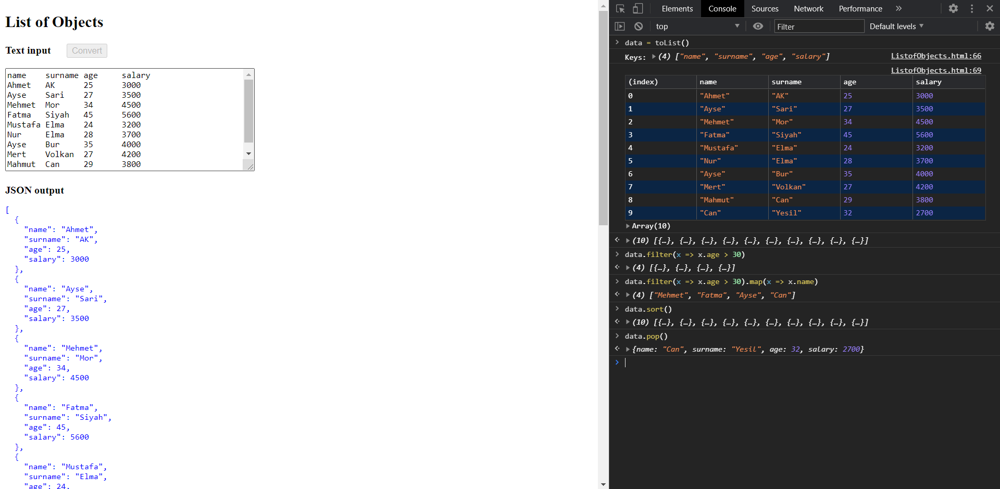

JSON output
function toList(str) {
function toObject(x) {
let b = {}
for (let [i,s] of x.split('\t').entries())
b[keys[i]] = (isNaN(s)? s : Number(s))
return b
}
if (str) inp.value = str
else str = inp.value
convert.disabled = true
let [d0, ...data] = str.split('\n')
let keys = d0.split('\t')
console.log("Keys:", keys)
let a = data.map(toObject)
out.innerText = JSON.stringify(a, '' ,2)
console.table(a)
return a
}
Ref: Rest Parameters
Kendim en az 10 data içeren bir dataset oluşturdum. Daha sonra bu data seti kodun içerisine yerleştirdim. Sonrasında yaşı 30 dan büyük çalışanları getirdim filter ile. Ayrıca yaşı 30 dan büyük kişlerin adlarını map ile getirdim. Ayrıca ekstra olarak sort fonksiyonu ile sıralama yaptım, pop fonksiyonu ile de dizide son elemanı çıkardım.
